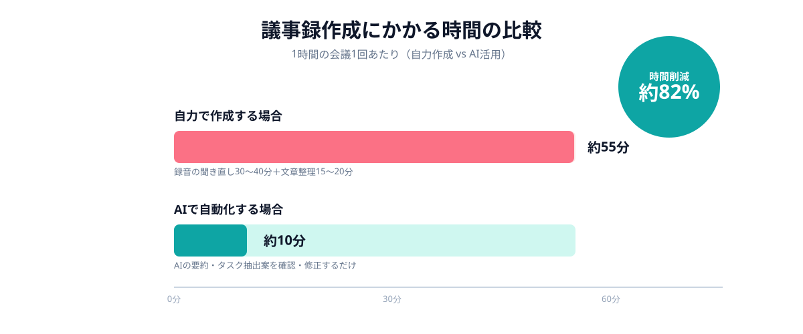
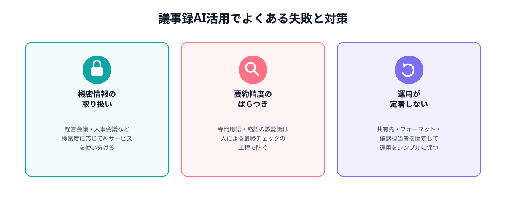

会議が終わったあと、「議事録をまとめる時間がない」「結局誰かが残業して仕上げている」——多くの企業でこうした状況が当たり前になっています。会議そのものは1時間で終わっても、録音を聞き直しながら文章に整える作業に同じくらいの時間がかかっているケースは珍しくありません。
この作業の多くは、すでにAIで自動化できる範囲に入っています。文字起こし・要約・タスク抽出までをAIに任せ、人は最後の確認だけを行う体制に変えることで、議事録作成にかかる時間を大幅に圧縮できます。
この記事では、議事録作成にAIを使う基本的な仕組みと、実務に組み込むための具体的な5つの手順、そして導入してから定着させるまでによくある失敗と対策を解説します。
議事録作成が会議の生産性を下げている理由
議事録作成が後回しになりやすい理由は、作業の負荷が「会議が終わったあと」に集中していることにあります。録音を聞き直し、発言を要約し、決定事項とタスクを整理して関係者に共有する——この一連の作業を、会議に出席していた担当者が他の業務と並行してこなさなければなりません。
その結果、議事録の完成が遅れて決定事項の実行に着手するタイミングがずれる、担当者によって議事録の質や粒度がばらつく、そもそも簡単なメモ程度で済ませてしまい、後から「何を決めたか分からない」状態になるといった問題が起こりやすくなります。
- 会議後にまとめて作業する必要があり、他の業務と競合しやすい
- 担当者のスキルや時間の余裕によって、議事録の質がばらつく
- 毎回の負荷が大きいため、簡易メモで済ませてしまう会議が増える
これらの課題に対して、近年広く使えるようになったのが、会議の音声をAIに処理させて要約案まで作らせる方法です。ゼロから人が書き起こす作業をAIに任せることで、担当者の作業を「最終確認」に近い負荷まで減らすことができます。
AIによる議事録自動化の基本的な仕組み
議事録のAI自動化は、大きく3つの処理の組み合わせで成り立っています。1つ目は音声認識による文字起こし、2つ目は文字起こしデータをもとにした要約・構成の生成、3つ目は決定事項やタスクなど特定の情報の抽出です。
多くの議事録作成ツールやチャット型AIは、この3つの処理をひとつの流れとして提供しています。会議の録音データをアップロードするか、オンライン会議ツールと連携させておくだけで、文字起こしから要約案までを自動で生成してくれる仕組みです。
重要なのは、AIが作る要約案はあくまで「下書き」であるという前提を持つことです。発言の文脈や社内特有の言い回しを完全に理解できるわけではないため、AIの出力をそのまま正式な議事録として配布するのではなく、人が要点だけを確認する工程を必ず残す必要があります。
自力作成とAI活用、かかる時間はどれだけ変わるか
1時間の定例会議を例にすると、自力で議事録を作成する場合、録音の聞き直しに30〜40分、文章としての整理に15〜20分かかることが多く、合計で45分〜60分程度の作業時間が発生します。一方、AIによる文字起こし・要約を活用した場合は、AIの出力を確認・修正する作業が中心になるため、同じ内容を10分前後でまとめられるケースが増えています。

もちろん、会議の専門性が高く、AIが用語や略語を正しく認識できない場合は確認作業に時間がかかることもあります。それでも、「ゼロから書く」作業を「AIの出力を直す」作業に変えるだけで、担当者1人あたりの負荷は大きく減らせるというのが実態です。
議事録作成をAIで自動化する5ステップ
実際に議事録作成をAIで自動化する場合、次の5ステップで進めると無理なく定着させやすくなります。
STEP1｜録音・文字起こしを自動化する
まず、会議の録音を自動で取得し、文字起こしまでを行う仕組みを整えます。オンライン会議であれば、会議ツールの録音機能と連携できる文字起こしサービスを使うのが手軽です。対面会議の場合は、ICレコーダーやスマートフォンの録音データをAIサービスにアップロードする運用でも十分対応できます。
このステップでは「精度の高い文字起こし」よりも、まず録音を取り忘れない運用を定着させることを優先します。
STEP2｜AIに要約・構成案を作らせる
文字起こしされたテキストをAIに渡し、議題ごとの要約と構成案を作らせます。「議題」「発言の要点」「決定事項」「次のアクション」といった見出しを指定してプロンプトを作っておくと、毎回フォーマットがそろった議事録案が生成されます。
社内で繰り返し使うプロンプトは、テンプレート化して共有しておくと、担当者が変わっても同じ品質の議事録案を作れるようになります。
STEP3｜人がポイントだけ最終チェックする
AIが作った要約案を、会議出席者がそのまま確定稿として使うのではなく、「発言の趣旨と違う部分がないか」「重要な決定事項が漏れていないか」だけを重点的に確認します。一字一句を見直すのではなく、要点のズレを直すという意識で取り組むと、確認作業自体は数分で終わります。
STEP4｜決定事項・タスクをAIに抽出させる
議事録の本文に加えて、「決定事項一覧」「タスク・担当者・期限」を別枠で抽出させると、議事録がそのままタスク管理の起点になります。プロンプトに「決定事項とタスクを表形式でまとめて」と指定しておくだけで、会議後にタスクを洗い出す作業も省けます。
STEP5｜共有・保存まで自動化して定着させる
最後に、確定した議事録をチャットツールや社内Wikiに自動投稿する、もしくは決まったフォルダに自動保存する仕組みまでつなげます。確認から共有までの手数が減るほど、運用が途切れずに継続しやすくなります。
議事録AI活用でよくある失敗と対策
議事録作成をAIで自動化する際、いくつかの共通した失敗パターンがあります。事前に把握しておくことで、導入後のトラブルを避けやすくなります。

1つ目は機密情報の取り扱いです。経営会議や人事関連の会議など、社外に出せない内容を扱う場合は、利用するAIサービスのデータの取り扱い方針を必ず確認し、用途に応じてサービスを使い分ける必要があります。
2つ目は要約精度のばらつきです。専門用語や社内独自の略語が多い会議では、AIが意味を取り違えることがあります。これを完全に防ぐことは難しいため、「人が最終確認する工程を省略しない」というルールを徹底することが対策になります。
3つ目は運用が定着しないことです。導入直後は活用されても、共有先やフォーマットが会議ごとにバラバラだと、次第に使われなくなっていきます。共有先・テンプレート・確認担当者をあらかじめ固定しておくことが、定着のポイントです。
- 会議の機密度に応じて、利用するAIサービスを使い分ける
- AIの要約案は下書きとして扱い、人による最終確認を必ず残す
- 共有先・フォーマット・確認担当者を固定し、運用をシンプルに保つ
まとめ・ANKENへのご相談
議事録作成のAI自動化は、既存のAIサービスを組み合わせるだけで始められる範囲が広く、「録音→文字起こし→要約→タスク抽出→共有」という一連の流れを仕組み化することで、担当者の作業時間を大きく圧縮できます。
もし「自社の会議形式・社内ツールに合わせた専用の議事録Botまで作りたい」という場合は、既存のAIサービスを組み合わせるだけでは対応しきれないこともあります。そうした場合は、ANKENのスポット発注で、AI開発に強いエンジニアに週末スポットで構築を依頼することも可能です。固定費ゼロ・要件が固まっていない段階からのご相談も歓迎します。
文字起こし・要約・タスク抽出までを自社用に組み込みたい場合も、スポット発注で実現できます。固定費ゼロ・週末スポットから依頼可能です。
👉 無料でスポット依頼を相談する初回相談は無料です。要件が固まっていなくてもOKです。